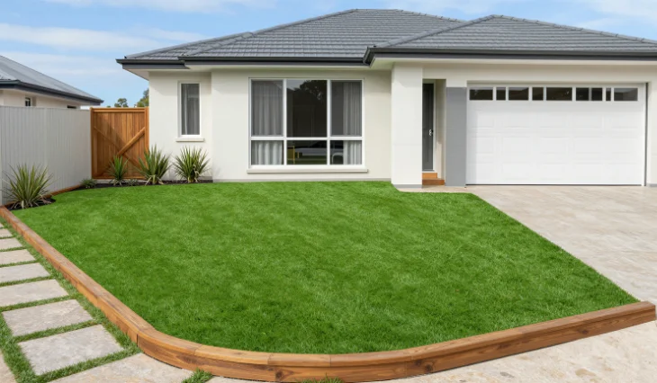
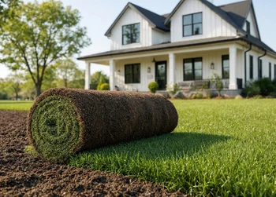
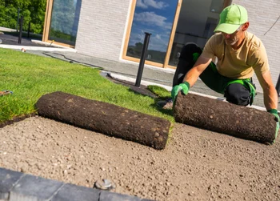

Residential Turf Installation in Dallas
Residential artificial turf gives Dallas homeowners a practical way to create a consistently green lawn without routine mowing or the watering demands of natural grass. It can be planned for front yards, backyards, side yards, and other residential outdoor spaces.
Install Turf Near Me works with experienced contractor partners serving Dallas and the DFW area. Each residential turf project is considered around the property's layout, drainage, access, landscaping, and everyday use.
Artificial Grass Designed for Dallas Homes
No two residential yards have exactly the same conditions. Proper turf planning considers the existing surface, grading, drainage, surrounding landscaping, foot traffic, and how homeowners expect to use the space.
Careful site preparation and turf fitting help create a clean, stable artificial lawn that works with patios, walkways, planting beds, fences, and other existing features around the property.
Residential Turf Installation Process
A residential artificial turf installation begins with evaluating the site and preparing the area for the planned turf system. Existing material is removed as needed before the surface is graded and a suitable base is prepared and compacted.
Artificial turf is then positioned, cut, joined, and secured to fit the space. Edges, transitions, and surrounding landscape features are addressed before infill and brushing are completed when required for the selected turf system.
Where Residential Artificial Turf Works Well
Artificial grass can be useful for Dallas yards where natural lawn areas become worn, receive challenging levels of shade, experience regular foot traffic, or require more lawn maintenance than the homeowner wants to manage.
Residential turf can also be incorporated around patios, walkways, landscape beds, pool-adjacent areas, narrow side yards, and other spaces where a clean, consistent lawn surface complements the property's existing design.


Benefits of Residential Artificial Turf
- Green Appearance
- Reduced Lawn Watering
- No Routine Mowing
- Lower Lawn Maintenance
- Options for Shaded Areas
- Clean, Usable Lawn Surface
- Backyard Turf
- Suitable for High-Use Areas
- Site-Specific Turf Planning
Plan Your Residential Turf Project in Dallas
The right residential turf system depends on the property's size, existing conditions, drainage, landscaping, traffic, and how the outdoor space will be used. Site-specific planning helps determine an appropriate approach for the yard.
Contact us to discuss residential artificial turf installation in Dallas and request an estimate for your front yard, backyard, side yard, or other residential outdoor space.
Ready to Upgrade Your Dallas Lawn With Artificial Turf?
Discuss your residential turf project and explore practical artificial grass
options for your Dallas front yard, backyard, or outdoor living space.